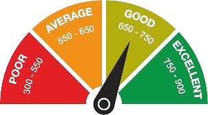

Understanding Your CIBIL Score and Its Impact
- When anyone takes the PAN, they become a client in the finance sector.
- Not only EMI-based loans, but credit card repayment defaults also affect your repayment status, which is crucial for loan approval.
- CIBIL is a report generated based on data provided by all financial institutions to the CIBIL organization.
- CIBIL scores range from 0, -1, and 300 to 900. Scores of 0 and -1 indicate insufficient information with CIBIL regarding the applicant. The applicant's status in view of CIBIL is detailed below based on the score.
- While we usually think CIBIL reports last 24 months of repayment, it actually registers our repayment status for the last 15 years.
- When approving anyone's loan application, financial institutions check two factors:
- Intention: Does the applicant have the intention to repay the loan? This is checked through current loan repayment tracks.
- Ability: Does the applicant have the ability to repay the loan?
